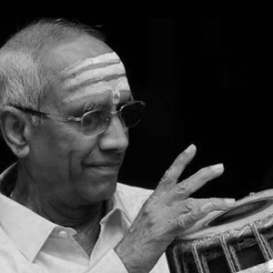
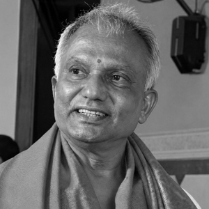
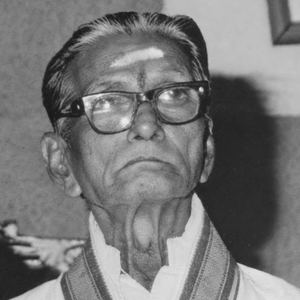

Advanced tutelage
THE ARTIST · THE JOURNEY
Shaped by tradition, guided by gurus, and driven by an enduring pursuit of musical expression.
Discover the journey ↓A MUSICAL JOURNEY
An artistic life shaped by the guru–shishya tradition, the concert platform and a deep appreciation of rhythm.
Sri Prithvi Krishna received his foundational training from Vid. Byrappa, further refined his skills under Vid. M. S. Ramaiah and Vid. M. A. Krishnamurthy, and underwent advanced tutelage with the legendary Vid. Mannargudi A. Easwaran. This rich lineage has given him a deep command over laya, refined accompaniment aesthetics and an understanding of intricate rhythmic patterns.
His playing is characterized by crisp strokes, well-structured and imaginative korvais, and a musical sensitivity that enriches the concert experience. Whether accompanying vocal music, instrumental performances or dance, he seeks a fine balance of subtlety and strength, responding intuitively to the artistic language of the lead performer.
An A-Top Ranked Mridangam Artist of All India Radio, Bengaluru, Prithvi is a regular performer on AIR and Doordarshan and has been performing professionally for over 23 years. He has accompanied eminent musicians including Vid. Rudrapatnam Thyagarajan, Vid. T. V. Ramaprasad, Vid. S. Shankar, Vid. D. Balakrishna, Vid. R. K. Padmanabha and Vidushi Vijayalakshmi Subramaniam, as well as senior dancers such as Nrithya Kalanidhi Dr. Neena Prasad. He has performed at prestigious sabhas and festivals in India and abroad.
Alongside his musical career, Prithvi worked as a software professional for 15 years before choosing to pursue music full-time. He has also served as a Guest Lecturer in Mridangam at the Music Department of Srishti School of Design.
A passionate teacher and collaborator, he conducts workshops, lecture-demonstrations and rhythm-based explorations for learners and audiences. His interests include the aesthetics and construction of korvais, the preservation of bani traditions and the evolving role of the mridangam in contemporary accompaniment.
He is the Founder of Swami Desikan — Temple of Fine Arts, Bengaluru, an organization dedicated to promoting the performing arts and nurturing artists.
LINEAGE & GRATITUDE
With reverence and gratitude to the teachers whose knowledge and generosity continue to guide the path.
“The art is carried forward not only through what is taught, but through what is lived, shared and thoughtfully passed on.”


